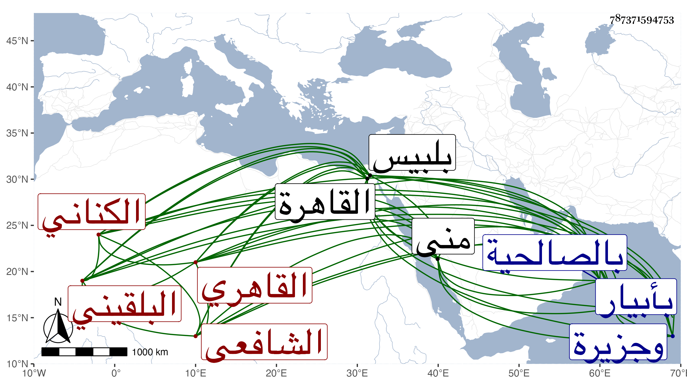

0902Sakhawi.DawLamic.ITO20230111-ara1.EIS1600.787371594753
Biography ID: 787371594753
260
محمد بن محمد بن عبد الرحمن بن عمر بن رسلان بن نصير البدر أبو السعادات ابن التاج أبي سلمة بن الجلال أبي الفضل بن السراج أبي حفص الكناني البلقيني الأصل القاهري الشافعي الماضي أبوه وجده وجد أبيه . ولد في رابع عشر ذي الحجة سنة إحدى وعشرين وثمانمائة أو سنة تسع عشرة واستظهر له بالقاعة المجاورة لمدرسة جد أبيه من القاهرة وكان أبوه حينئذ بمنى ومعه ولده العلاء فأخبر أنه رأى في تلك الليلة وهو هناك أن زوجة بيه وضعت ذكرا فتفاءل بذلك وعد وقوع الرؤيا في ليلة الولادة من الغريب . ولما ولد دخل جده للتهنئة به وتفل في ... فيه وحنكه ودعا له وشمله بلحظه ثم تكررت رؤيته له ، ونشأ في كفالة أبويه وكان معهما وهو طفل حين حجا في سنة خمس وعشرين فختن هناك بعد أن طاف به السراج الحسباني أسبوعا ووفت أمه بنذرها للمسجد النبوي وهو قنديل من فضة إن ولد لها ذكر ، ورجع فحفظ القرآن وصلى به على العادة قبل الثلاثين وصلى معه في الختم وطول الشهر الأجلاء ثم حفظ العمدة وقرأ المنهاج وألفية النحو ونصف مختصر ابن الحاجب الأصلي وعرض على جماعة منهم عم والده العلم بل قرأ عليه من أول المنهاج إلى آخر النفقات في مجالس آخرها سلخ ذي القعدة سنة أربع وثلاثين ولازمه للتفقه أتم ملازمة حتى قرأ عليه التدريب وجملة من الحاوي وغيره وكذا أخذ طرفا من الفقه عن البدر بن الأمانة والزين البوتيجي واشتدت ملازمته فيه للقاياتي والونائي ومما حضره عنده ما أقرأه في تقسيم الروضة والشهاب المحلي خطيب جامع ابن ميالة والشرف السبكي في عدة تقاسيم كان قارئا في بعضها بل قرأ عليه الحاوي بتمامه والعلاء القلقشندي وكان أيضا أحد قراء التقسيم عنده وقرأ الأصول على البساطي والقاياتي والشرف السبكي والمحلي والكافياجي والشرواني فعلى الأول مجلسا من المختصر وعلى الثاني جملة منه وعلى الثالث بعض المنهاج الأصلي وعلى الرابع غالب شرحه على جمع الجوامع وأشار إلى استغنائه بتمام أهليته عن قراءة بقيته وعلى الخامس غالب العضد وكذا على السادس مع غالب الحاشية والعبري وعنه أخذ غالب شرح المواقف وكذا أخذ في علم الكلام عن الكافياجي والفرائض والحساب عن ابن المجدي قرأ عليه الفصول لإبن الهائم وسمع غيره وعن البوتيجي وأبي الجود وحرص على ملازمته بحيث كان ربما يجتمع عليه في اليوم أربعة أوقات والشهاب السيرجي قرأ عليه منظومته المربعة والشمس الحجازي أخذ عنه النزهة والعربية عن الحناوي والراعي وهو أول من فتح عليه فيها كما بلغني ومما قرأه عليه شرحه للجرومية المسمى المستقل بالمفهومية وإلى شرح قوله في الإبتداء كذا إذا يستوجب التصديرا من تصنيفه فتوح المدارك إلى إعراب الفية ابن ملك وعن ابن قديد قرأ عليه غالب التوضيح وقطعة صالحة من ابن المصنف وأخذ في التوضيح أيضا عن أبي القسم النويري وسمع علي الزين عبادة الحاجبية إلى مبحث التنوين وامتنع الزين من ختمها على قاعدة أبناء العجم غالبا وعن القاياتي في المغنى وقرأ على العجيسي بعض الألفية وعلى الشرواني في نحو العجم شرح اللب والتصريف عن العز عبد السلام البغدادي قرأ عليه شرح تصريف العزي للتفتازاني وعليه قرأ غالب التلخيص في المعاني البيان وغالب شرح الشمسية في المنطق وجميعه على الشرواني وعلى أبي القسم في شرح ايساغوجي والمتن على الكافياجي وعنه أيضا أخذ المعاني وأخذ العروض والقوافي عن النواجي ومما قرأه عليه الخزرجية وعروض ابن القطاع والتصوف عن أبي الفتح الفوي قرأ عليه رسالته ولقنه الذكر وكذا تلقنه من الغمري وألبسه طاقيته ومن الزين مدين الاشموني وعمر النبتيتي وغيرهم والقراآت عن فقيهه ابن أسد تلا عليه لأبي عمرو ونافع وابن كثير وعلوم الحديث عن شيخنا وقرأ عليه شرح النخبة له وسمع عليه غيره دراية ورواية وكذا سمع علي الزين الزركشي غالب مسلم بقراءة الجمال بن هشام في الشيخونية والبدر حسين البوصيري مجلسا من الدراقطني بقراءة أبي القسم النويري وعائشة الكنانية شيئا بقراءة ولدها العز وابن بردس وابن ناظر الصحابة بقراءة البقاعي وأربعين شيخا من العلماء والمسندين ختم البخاري بقراءة ابن الفالاتي ولم يمعن فيه ، وأجاز له المقريزي وغيره بل أجاز له في جملة بني أولاد جده خلق في استدعاء مؤرخ برجب سنة ست وثلاثين ، ولم يزل مشتغلا بالعلوم مستبصرا في المنطوق منها والمفهوم ومع قيام والده عنه بجميع احتياجه وسلوكه الطريق الموصل لاستقامته دون أعوجاجه بحيث لم تعرف له صبوة ولا عدت عليه نقيصة ولا هفوة حتى أشير إليه بالتقدم ولاستحقاق للاقتباس منه والتفهم وشهد له بذلك الأكابر وأثنت عليه بالألسن المحابر فكان ممن شهد له بالبراعة في الفقه وأصوله والفرائض وغيرها مما ظهر له من مباحثه على الطريقة الجدلية والمباحث المرضية والاسالب الفقهية والمعاني الحديثية عم والده وأذن له هو والشرف السبكي في الافتاء والتدريس وقال ثانيهما أنه صار نور حدقة فضلاء عصره ونور حديقة نبلاء مصره وسما اسمه في محافل النظ بين أقرانه ونمارسمه في مجالس التحقيق بين علماء زمانه وأنه ممن بحيث في كتب المذهب من مبسوط ومختصر حتى ظهر له التحقيق المعتبر وله حل الحاوي الصغير ما يفوق به على كثير ممن هو بين أهل زمانه كبير بحيث علقت التعليقة عليه بذهنه الصحيح ولسانه الفصيح وكذا أذن له في إقراء ما شاء من كتب الفرائض السيرجي وباقراء كتب المنطق لكل من يستفيد كائنا من كان الكافياجي وباقراء العربية الراعي ، ووصفه المقريزي بزين الزمان وتاجه وعين الاوان وسراجه مطلع العلوم لنا نجوما وأهلة ومرسل الفوائد والفرائد علينا غيوما مستهلة ، وأثنى ابن قديد على صفاء ذهنه والمحلى على بديع فهمه وجودة مضمونه جل أرسل له مرة في واقعة خالف فيها عم والده يأمره حسبما قرأته بخطه بالنظر فيها ليكون متأهبا لها في العقد الذي سيجتمع فيه بسببها وكذا بلغني عن كل من شيوخنا الونائي والقلقشندي والمحلي ونحوه قول شيخنا أنه فاق أقرانه نظرا وفهما وشأى أشياعه معرفة وعلما وارتقى في حسن التصور إلى المقام الاسنى وفاق في حسن الخلق والخلق حتى استحق المزيد من الحسنى فهو البدر المشرق في ناديه ومفخر أهل بيته حين يقصده المستفيد ويناديه . وحامل لواء الفنون الآلية بحيث ضاء ذهنه كنار على علم وصار أحق بقول من قال : ومن يشابه أبه وجده فما ظلم ، وأعلى من هذا كله أن والده رغب له عما كان باسمه من نصف تدريس التفسير بجامع طولون فعمل به حينئذ اجلاسا حضره سعد الدين بن الديري والبساطي والمحب ابن نصر الله وغيرهم من الأكابر تكلم فيه على قوله تعالى رب أوزعني أن أشكر نعمتك التي أنعمت علي وعلى والدي وأن أعمل صالحا ترضاه الآية وقال المحب اذ ذاك قليل من الفهم خير من كثير من الحفظ وسأل المدرس سؤالا فانتدب الشمس القرافي للجواب عنه بما نازعه فيه المدرس ووافقه الحنفي إذ قال فحينئذ سؤال المدرس باق وكذا رغب له والده حينئذ عما كان باسمه أيضا من نصف التصدير في الحديث بالاشرفية القديمة ثم كملا له بعد موت عمه أبي العدل . وناب عن عم والده في القضاء سنة إحدى وأربعين بالصالحية وكذا بأبيار وجزيرة بني نصر وطنتدا وغيرها غوضا عن السفطي وببلبيس وعملها عوضا عن علي الخراساني المحتسب وبفوة ومرصفا وسنيت وعملها وبغير ذلك ثم ولي قضاء العسكر ونظر أتابك العزي وتدريس الحسامية بأطفيح والنظر عليها ، كل ذلك بعد وفاة أبيه ، وكذا نيابة النظر على وقف السيفي بعد أبيه وعمه والنظر على جامع الانور ووقف بيلبك الخازنداري وغيرها والتدريس في الفقه بالمنصورية برغبة المحب القمني له عنه والنظر على سعيد السعداء بعد الزيني بن مزهر بالبذل ، ثم دبر بعض الحساد من دس الاستشلاء عليه حتى انفصل عنه قبل تمام السنة واستمر الاسترسال من المتعصب حتى انتزع عم والده منه النظر على وقف السيفي بل وتعدى لغيره من وظائفه ولكنه لم يتم بل اجتهد في عوده وتفويض المشار إليه النظر له واستحكم سعد الدين بن الديري شيخ المذهب الحنفي بصحة التفويض وأفتاه بأن مذهبه انقطاع ولاية المفوض ولو كانت شرط الواقف ولذا لم ينهض أحد من القضاة بعده لانتزاعه منه إلا الزين زكريا بواسطة مرافعة بعض المستحقين بل وانتزع منه ألف دينار فأزيد مصالحة عن الفائض من متحصله مدة تكلمه عليه وصار البدري يتكلم عنه بطريق النيابة لكون الحنفي المتولي لم يوافق على ما أفتى به ابن الديري وكاد البدر يقد غنبا سيما قد عجز المناوي عن ماهو دون هذا معه ولما توفي عم والده سعي في النيابة عن بنيه في تداريسه ونحوها لكونه صهره زوج ابنته فأجيب ثم عورض فكان ذلك حاملا له على الاستقرار في الربع من جميعها وهي الخشابية والشريفه والقانبيهية والبرقوقية ميعادا وتفسيرا ولافتاء بالحسنية وما باسمه من مرتب ونظر وغير ذلك ثم بعده مدة استقر في الثمن منها أيضا وتكلف في المرتين دون ثلاثة آلاف دينار رغب للمساعدة فيها عن تدريس الفقه بالمنصورية وحصته في القانبيهية وغير ذلك وباشرها شريكا لفتح الدين ابن المتوفي هذا بعد أن كان البدر البغدادي قاضي الحنابلة تكلم سرا مع الظاهر جقمق حين عين الخشابية للمناوي في توعك عم والده الذي كان أشرف فيه على الموت أن لا تخرج عنه بدون مقابل وفي غضون مباشرته لما تقدم ولي القضاء عوضا عن الصلاح المكيني بتكلف نحو سبعة آلاف دينار وذلك في حادي عشر المحرم سنة إحدى وسبعين فأحسن المباشرة في أول ولايته وأعلن كل من رفقته الابتهاج بمرافقته والمنفصل مجتهد بمكره واعمال حيلته في إذهاب بهجته واخماد الارهاب من صولته بنفسه وأعوانه مع إخفائه وكتمانه والبدر مساعده بشدة صفاء خاطره وسده بعدم المداراة الطريق عن المعين له وناصره مع ما عنده من طيش وبادرة وتوجه لتحصيل ما يوفي منه تلك الديون المتكاثرة بدون دربة ورتبة مما الظن لوصول الخصم منه لما ليس لهذا به نسبة ، إلى أن انفصل قبل تمام ثلث سنة وتعطل عليه العود لهذه الخطة التي هي عندهم حسنة وذلك في ثاني جمادى الاولى من السنة واستمر في المكابدة والمناهدة بسبب الديون الزائدة مع شموله الوفي فيها باللطف الخفي غير آيس من رجوعه ولا حابس نفسه عن التلفت إليه في يقظته وهجوعه خصوصا وهو يجد المجال للتكلم غير مرة ويعد بالمال العالم بأنه لا يترك منه ذرة بل حضر في كائنة أفتى فيها عقد مجلس بحضرة السلطان وغيبة المتولي حينئذ إظهارا للتفكير وتنبيها ومع ذلك فما وصل ، إلى أن انفصل بعد تعلله أزيد من شهرين بقرحة جمرة في كتفه ثم باسهال خفيف عصر يوم السبت ثاني ربيع الاول سنة تسعين وصلى عليه من الغد بجامع الحاكم تقدم الناس الجلال البكري مع حضور القضاة إلا الشافعي بتقدم الزيني بن مزهر له ثم أدركه الشافعي فصلى عليه عند باب مدرستهم ثم دفن فيها عند جذه وجمهور سلفه وتأسف كثيرون على فقده . وكان إماما علامة فقيها نحويا أصوليا مفننا بحاثا مناظرا مشاركا في الفضائل حسن التصور طلق اللسان فصيح العبارة مقتدرا على التصرف والجمع بين ماظاهره التنافر شديد الذكاء حسن الشكالة وضيئا لطيف العشرة زائد الإعتقاد في الصالحين كثير الزيارة لهم أحياء وأموتا بعيدا عن الملق والمداهنة سريع البادرة والرجوع شديد الصفاء ، تصدى للتدريس قديما بجامع الازهر وبغيره من الأكن والبلاد وأخذ عنه الأكابر التفسير والحديث والفقه والفرائض والاصلين والعربية والصرف والمعاني والبيان والمنطق وغير ذلك وقرئ عنده البخاري ومسلم وغيره مرة ، وشرع قديما في كتاب جعله كالمحاكمات بين المهمات والتعقبات وقف على ما كتبه منه شيخنا واستحسنه وحضه عل إكماله وكذا شرح مقدمة شيخه الحناوي في النحو في مجلد لطيف وقف عليه مؤلف المتن وله أيضا جزء لطيف في العربية وبعض قواعد فقهية وحواش على شرح البيضاوي للاسنوي وعلى الخبايا الزوايا للزكرشي وغير ذلك بل كتب على الروضة من محلين ولا تخلو دروسه من عنديات وأبحاث مبتكرة ولكن لسانه أحسن من قلمه وبيانه أمتن من عدمه وينسب إليه العمل بمسألة ابن سريج في الطلاق وقد تزوج قبل موته بيسير بابنة السبر باي زوجة الصلاح المكيني مع بقاء ابنة العلم البلقيني التي كان تزويجها بعد أختها بمقتضى اعتقاده في عصمته وأقر في مرض موته بحقوق ونحوها ، ومحاسنه كثيرة وكنت أوده ولكن الكمال الله وما أحببت لزكريا ما عمله معه وقد سمعته يقول أنا قتيل زكريا ومرة الصاني ، ثم تصرف في تركته مع فتح الدين وغيره أقبح تصرف ولذا لم يلبث أن قوصص الكل ولم يظهر للقدر المأخوذ منه بالتجبر والتكبر ثمرة فانه بعد ابتياع بدل به حل وبيع وبذل فيما الله عالم به بل تمنى المستحق لوقف السيفي دوام ذلك كما كان رحمه الله وإيانا . وقال الشهاب الطوخي بعد موته :
| رعى الله قبرا ضم أعظم عالم | بتحقيقه حاوي الجواهر كالبحر |
| فمذ غاب أظلم الجو بالورى | وكيف يضيء الجو مع غيبة البدر |
